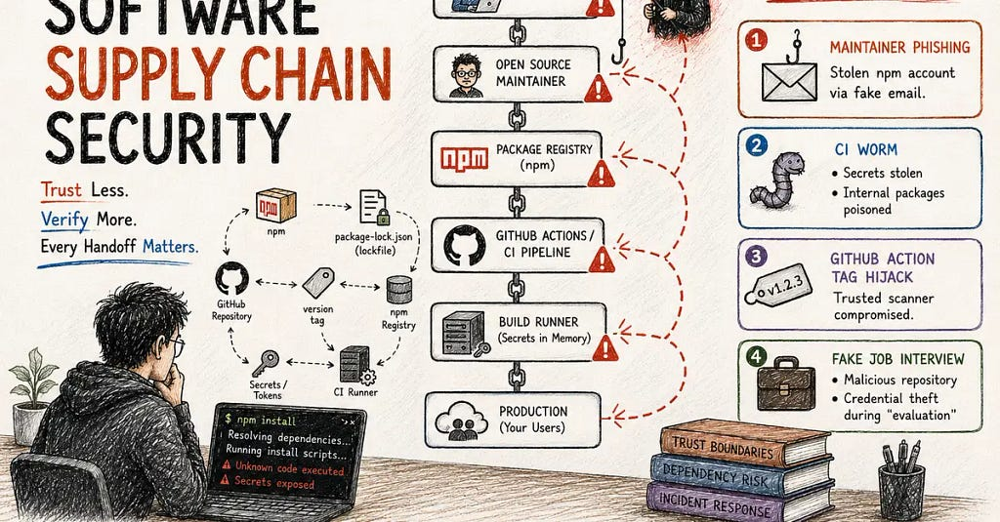
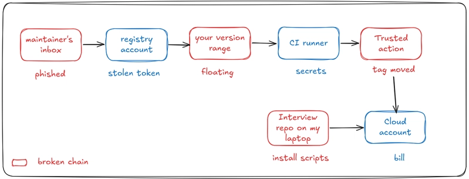

Four supply chain attacks that changed how I think about software security

We started the project last spring. New service, six weeks to ship, so we did what everyone does and reached for the ecosystem. By the time the first build went green the lockfile had 1,247 entries in it. We had chosen about thirty. The rest arrived as dependencies of dependencies, and I could not have named one of their maintainers if you had paid me.
One of those maintainers got an email on a Friday evening.
It offered free API credits for an AI coding tool with a countdown to hurry things along. The login page looked right. He typed in his registry password and a one time code, and within a few minutes a stranger held his publishing rights and had pushed a fresh patch release of every package he maintained. He went to bed, and nobody had noticed anything yet.
Our CI did not know it was the weekend. We had that package floating on a version range instead of a pinned version, the nightly build resolved the range, and an install script executed inside the runner while it was holding every secret we had ever handed the pipeline. That meant cloud keys, the GitHub token, and our own publishing token, which the script used to push poisoned versions of our internal packages onward. By Monday three other teams had installed our compromise as a dependency of theirs.
We spent that week rotating credentials and reading logs. Then we did the responsible thing and added a scanner to the pipeline. Well known tool, thousands of projects use it, referenced by version tag like every other workflow file in the company. It sat in front of every install and checked packages against known malicious releases. For four months it was the most reassuring line in our config.
Then somebody rewrote history on that scanner’s tags. The tag we referenced still existed, still looked identical in the commit list, and pointed somewhere new. A scanner needs elevated permissions to do its job, so ours read every secret in the runner and posted them somewhere useful, and it did that while returning a clean report. The control we installed to catch the last attack delivered the next one. We added a security scanner to catch supply chain attacks. Months later, that scanner was the supply chain attack.
I updated my CV.
A recruiter reached out about a senior role. Good money, fully remote, two friendly calls. Before the technical round, the recruiter asked me to clone their repository and come back with recommendations on their API response times. I cloned it, ran npm install, spent an evening in the code and sent back something I was proud of. The stack was interesting and the problem was real, which is why it never occurred to me to be suspicious.
Then I waited on the offer, and the AWS bill arrived instead.
The repository was gone from GitHub by the time I went looking for it. There had been an install script in the package manifest, and it had taken my credentials while I was still reading the README, before I had formed a single opinion about their API. I never did hear back about the role.
What software supply chain security actually means
Four separate attacks in that story, and none of them exploited a bug in code we wrote or required anybody on my team to make an obviously stupid decision.
Your software supply chain is everything that has to happen between a person typing code and that code running in your production environment. NIST treats this under cybersecurity supply chain risk management in SP 800–161 Rev. 1, where the risk spans a full lifecycle from development through delivery, integration and operation rather than stopping at the edge of your own repository [1]. SLSA, the framework most teams reach for when they want something they can actually implement, splits the same ground into source threats, build threats and dependency threats, with its strongest guarantees covering the build [2].
You add one package to package.json and run npm install. Three things had already happened in infrastructure you cannot see: a maintainer wrote the code and pushed a commit, a CI job on a platform you have never logged into built it, and that job used a token to publish a tarball to a registry. The rest happens on your side. Your package manager fetches the tarball, your lockfile records a version and a hash, your build copies it into a container image, and your deploy pushes that image into production. You reviewed none of that sequence, you inherited all of it, and each handoff is a place where what arrives can stop matching what was written.
So the list of things you are trusting is always longer than your dependency list. It runs from the maintainer’s inbox all the way through to the base image under your container and the laptop you cloned that repository onto.

Every link in that chain runs code you have not read using permissions you granted earlier and stopped thinking about. Both paths end in the same place, because a laptop and a build runner are the same kind of target: a machine holding live credentials, doing what it was told. Neither NIST nor SLSA has much to say about the laptop, which was never part of anybody’s build.
The parts that actually happened
The narrative above is a composite. Each beat in it is a real, documented incident.
The phishing email
On September 8, 2025, the maintainer of chalk and debug received a fake two factor reset notice from support@npmjs.help, a domain registered three days earlier [3]. The attacker captured a password and a live one time code, then published malicious versions of 18 packages carrying a browser based crypto stealer [4]. Those packages draw more than two billion downloads a week. The bad versions were live for roughly two hours, and Wiz still measured the malicious code reaching one in ten cloud environments inside that window [5].
The lure in my version is free AI credits rather than a security notice, a detail that changes every few months while the mechanism stays the same.
The worm in the pipeline
Shai-Hulud, first seen in September 2025, does what the fictional install script did. It steals a publish token, enumerates every package that token can reach, injects itself and republishes [6]. The November 2025 wave compromised over 700 packages and exposed roughly 14,000 secrets across 487 organisations [7]. New waves continued through 2026 [8], and by May 2026 one of them needed no stolen credential at all: the attackers poisoned a CI cache through a pull request workflow misconfiguration and waited [9].
The scanner that carried the payload
On March 19, 2026, a group calling itself TeamPCP force pushed 75 existing tags in aquasecurity/trivy-action to malicious commits, preserving the original author names, messages and timestamps so the history looked untouched. One forensic tell was a commit claiming a 2021 date with a parent commit dated March 2026 [10]. More than 10,000 workflow files referenced that action [11]. The payload took everything the runner could see [12]. Aqua Security confirmed the attacker got in using credentials that were never fully rotated after an earlier incident [13], and within 96 hours those stolen CI credentials were used to compromise the Checkmarx AST action as well [14].
The interview that was not an interview
Microsoft tracks this as Contagious Interview and dates it to at least December 2022 [15]. Each campaign uses a fake recruiter from a crypto or AI company, a plausible assessment repository, and a payload in the lifecycle scripts rather than in the code you were asked to review. Some variants now fire when you open the folder in VS Code, through the workspace task file [15]. In July 2026 Elastic documented a version that split its payload across SVG flag images, and no antivirus engine flagged the repositories [16]. Stolen cloud keys get monetised quickly: AWS has seen miners deployed within ten minutes of a credential compromise [17].
The people holding it all up
Tidelift surveyed 437 maintainers in 2024. Sixty percent called themselves unpaid hobbyists, and 61% of that group maintain their projects alone [18]. Census II, from the Linux Foundation and Harvard, found that 136 developers wrote more than 80% of the lines added to 50 of the most used open source libraries [19]. The solo maintainer answering email on a Friday night is what the ecosystem actually looks like, not a device I invented for the story.
How to break the attack chain
- Commit a lockfile and install with npm ci in CI, so no build ever resolves a version range on its own.
- Add an install cooldown, so a version published an hour ago cannot reach your build. npm supports this through minimumReleaseAge, pnpm 11 enables it by default, and Dependabot ships a default cooldown [20].
- Disable lifecycle scripts by default and keep a short allowlist for the packages that genuinely need them. Both the worm and the interview repository needed an install hook to run at all.
- Pin GitHub Actions to full commit SHAs instead of version tags. A tag can be force pushed to point at new code, which is not possible with a SHA [14].
- Scope secrets per job and retire standing cloud keys in favour of short lived OIDC credentials. That is the same reasoning behind npm revoking every classic token in December 2025 and capping write tokens at 90 days [21].
- Rotate everything after an incident, not the parts you can reach easily. The Trivy compromise ran on credentials left behind by a previous cleanup [13].
- Open anything a stranger sends you inside a throwaway VM that has nothing worth stealing on it.
None of that is advanced. Every attack in this story worked because code nobody had read ran with credentials nobody had scoped.
Conclusion
We spent months teaching developers to write secure code. Then I reviewed four major software supply chain incidents. None of them exploited an SQL injection. None exploited an XSS. None required a buffer overflow. The attackers never touched the application’s source code.
They attacked what we trusted.
References
- NIST, SP 800–161 Rev. 1, Cybersecurity Supply Chain Risk Management Practices for Systems and Organizations, updated November 2024.
- SLSA, Supply chain threats, OpenSSF.
- Aikido Security, npm debug and chalk packages compromised, September 2025.
- Checkmarx, Chalk and 17 other npm packages compromised in supply chain attack, September 2025.
- Wiz, Widespread npm supply chain attack: breaking down impact and scope, September 2025.
- ReversingLabs, New Shai-Hulud worm spreads: what to know, November 2025.
- Zscaler ThreatLabz, Shai-Hulud V2 poses risk to the npm supply chain, November 2025.
- Unit 42, The npm threat landscape: attack surface and mitigations, updated July 2026.
- Akamai, Mini Shai-Hulud: the worm returns and goes public, May 2026.
- Upwind, Trivy supply chain incident: GitHub Actions compromise breakdown, March 2026.
- Cloud Security Alliance Labs, TeamPCP supply chain CI/CD research note, March 2026.
- Wiz, Trivy compromised by TeamPCP, March 2026.
- Legit Security, The Trivy supply chain compromise: what happened and playbooks to respond, March 2026.
- Sysdig, TeamPCP expands: supply chain compromise spreads from Trivy to Checkmarx GitHub Actions, March 2026.
- Microsoft Security, Contagious Interview: malware delivered through fake developer job interviews, March 2026.
- Elastic Security Labs, Contagious Interview malware in SVG images, July 2026.
- Dark Reading, Attackers use stolen AWS credentials in cryptomining campaign, December 2025.
- Socket, The unpaid backbone of open source, on the 2024 Tidelift maintainer survey.
- Linux Foundation, Open source maintainers: what they need and how to support them, on Census II.
- Socket, npm introduces minimumReleaseAge and bulk OIDC configuration, February 2026.
- GitHub Changelog, npm classic tokens revoked, session based auth and CLI token management, December 2025.
Originally published at https://dev.to on July 31, 2026.
Discussion
Comment here
Comments live in GitHub Discussions and are shown with giscus. Loading them connects this page to giscus.app and GitHub. To comment, you sign in with GitHub.
On LinkedIn
Prefer LinkedIn? Send me a message about this post.
Message me on LinkedIn